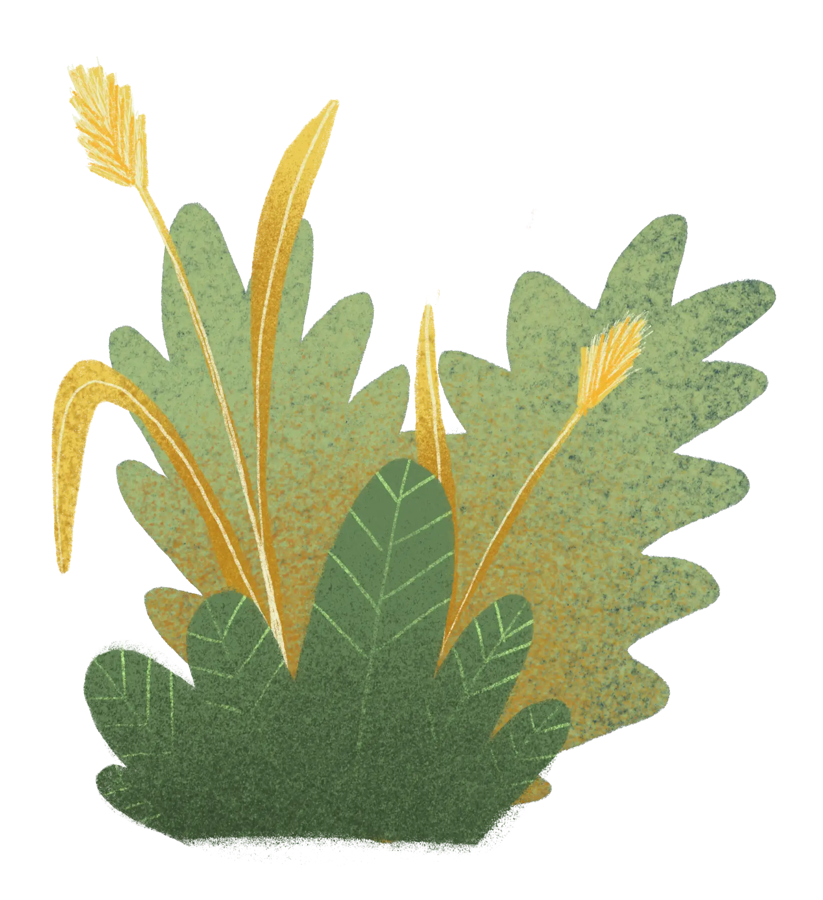
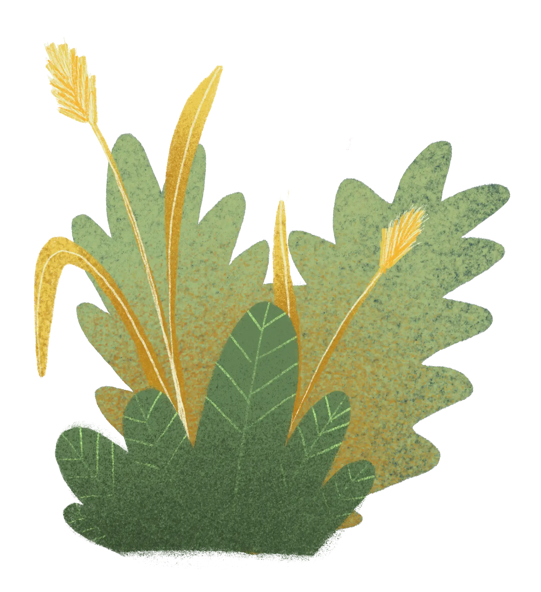
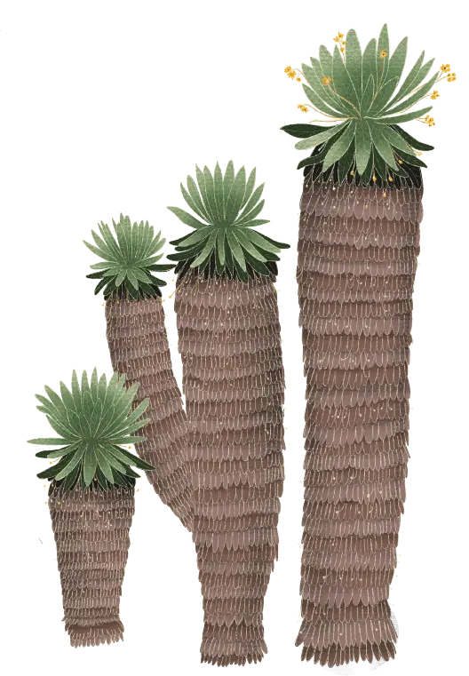
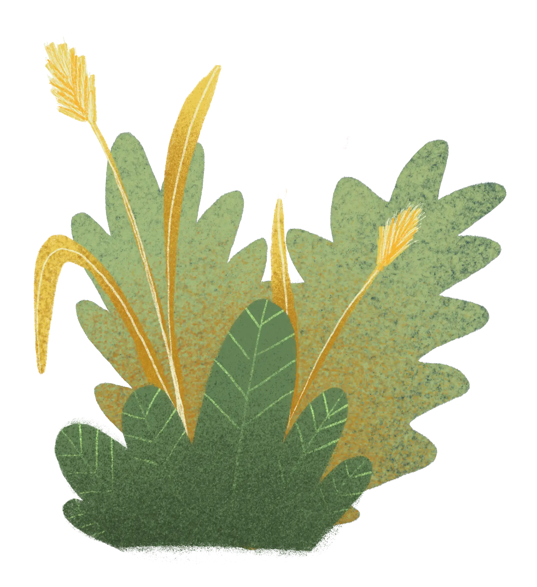

 

Existen diferentes estrategias de
acción para explorar, habitar y ca-
minar el páramo. Da click en cada
personaje para conocer algunos
de los proyectos.

Tengo 38 años, y desde hace más de cuatro años estoy privada de mi libertad en la Cárcel Buen Pastor. Soy prisionera política. No he cometido un crimen, pero vivo bajo el peso de un sistema que me acusa por luchar por mis derechos y los de mi gente. Estuve en las calles, organizando, luchando por la justicia social, por la paz. Pero mi voz fue silenciada, mi activismo criminalizado, y terminé aquí, tras ser arrestada en medio de una protesta, con acusaciones falsas y un proceso judicial plagado de irregularidades. Al principio, todo fue confusión y desesperación. En el momento de mi detención, no entendía cómo mi vida había dado ese giro tan abrupto. No podía creer que, de un día para otro, todo lo que había conocido se desmoronara. Mis amigos, mis compañeros de lucha, mi familia, se convirtieron en voces lejanas. Lo único que quedó claro era mi condena, el encierro, el silencio impuesto por quienes temen a la verdad. La cárcel es un lugar donde el olvido te acecha. Los días se vuelven interminables y los muros parecen susurrar que estás fuera del mapa, que no eres importante. Para el Estado, eres solo una prionera política, un expediente más. Para ellos, tus derechos son secundarios, tu dignidad no cuenta. Aquí no se escuchan las razones, ni los principios que te trajeron a este lugar. Solo se escucha el ruido del encierro y la indiferencia. Pero no todo ha sido oscuridad. En medio de este aislamiento, algo inesperado comenzó a cambiar. Un grupo de mujeres de la Fundación Comité de Solidaridad con los Presos Políticos junto con la Colectiva de Trabajo por las Mujeres Privadas de la Libertad llegó a visitarnos. Al principio, pensaba que sería como todas las visitas: otra ONG que se presenta, nos ofrece un poco de apoyo moral y luego se va. Pero no fue así. Ellas no vinieron solo a darnos palabras vacías de consuelo. Ellas llegaron a escucharnos, a reconocer nuestras luchas y a enseñarnos que, incluso aquí, en este lugar de castigo, tenemos derechos. Derechos que no dependen de ser prisioneras políticas, sino de ser mujeres. Uno de los talleres más impactantes que tuvimos fue sobre los derechos sexuales y reproductivos. Nos hablaron sobre el derecho a decidir sobre nuestros cuerpos, sobre la importancia de la autonomía, incluso dentro de las paredes de la prisión. Al principio, me costó entenderlo. Durante mucho tiempo, me había visto a mí misma como una simple prisionera: sin valor, sin voz. Pero esa charla cambió algo dentro de mí. Me di cuenta de que, aunque estuviera aquí, no debía renunciar a mi derecho a decidir sobre mi cuerpo, sobre mi salud, sobre mi vida. Recuerdo especialmente un ejercicio en el que nos pedían escribir sobre nuestra identidad. No fue fácil. Durante tanto tiempo, me habían reducido a mi condición de prisionera. Pero ese ejercicio me permitió recordar quién era antes de estar aquí, cómo luchaba por la justicia, cómo soñaba con un país libre de opresión. Redescubrí la mujer que soy, la que nunca dejará de luchar, la que sigue firme en sus convicciones, a pesar de estar tras las rejas. Poco a poco, comencé a entender que esta lucha no es solo por la libertad física, sino también por la libertad de pensamiento, de dignidad, de cuerpo. Las sesiones con las voluntarias de la fundación me ayudaron a reafirmar que nuestras voces importan, que nuestra lucha no está perdida solo porque nos encuentren encarceladas. A través de esos talleres, aprendí a exigir mis derechos y, más importante aún, a reconocer mi valor como mujer. Nadie, ni siquiera el Estado, puede arrebatarnos nuestra humanidad. A pesar de la opresión, de las largas horas de encierro, de la injusticia que nos rodea, he encontrado en este espacio algo que no esperaba: resistencia. Aquí, en la cárcel, en medio del dolor y la impotencia, sigo creyendo que mi voz tiene poder. Aprendí a hablar de mis derechos, a exigir que se respeten, a no permitir que mi cuerpo sea tratado como un objeto de abuso o indiferencia. Y aunque sigo siendo prisionera política, y mis días están marcados por la incertidumbre de un juicio que nunca llega a su fin, sé que esta cárcel no me define. Lo que define mi vida son mis principios, mis luchas, y la dignidad que he logrado recuperar gracias al apoyo de quienes, como las mujeres de la fundación, nos enseñan que no estamos solas. Que nuestra libertad, aunque restringida en el cuerpo, sigue viva en nuestras ideas y en nuestra resistencia. Porque la cárcel puede intentar robarme la libertad física, pero mi espíritu sigue libre, sigue luchando por un futuro mejor. Y eso, nadie me lo puede quitar.
En el encuentro con Chirimijas dialogamos sobre la defensa del Territorio reconociendo nuestrxs cuerpxs como primer territorio y como la música y las mujeres cuidan del agua y el medio ambiente por medio de diferentes prácticas tanto culturales y artísticas como políticas y reivindicativas en torno al Cuidado y Defensa del Territorio. Finalmente, me sentí muy tranquila, en un espacio muy seguro donde podía expresarme y sentirme cómoda con otras personas, donde intercambiamos sentires, pensares e ideas, fue un espacio para poder redescubrir mi talento en la escritura y composición, al igual que me hizo sentir que conecté con mujeres distintas a mí, pero qué teníamos en común ese espíritu de lucha y amor por el arte. Segura, tranquila y rodeada de seres poderosos.
Agradezco profundamente a la Asociación Guanga y Fondo Lunaria por las valiosas enseñanzas y aprendizajes que me han brindado. Como mujer indígena, he encontrado en esta asociación un espacio seguro y enriquecedor para descubrir mis derechos y vocaciones. En un momento en que es más necesario que nunca que las mujeres indígenas conozcan y ejerzan sus derechos, la Asociación Guanga ha sido un faro de luz y guía en mi camino. Pero más allá de eso, me han enseñado a valorar y amar mi propia identidad, a estar en paz conmigo misma y a encontrar mi lugar en el mundo. Mi gratitud es infinita hacia la Asociación Guanga y Fondo Lunaria por haberme brindado esta oportunidad de crecimiento y empoderamiento. Espero que mi experiencia pueda inspirar a otras mujeres indígenas a unirse a esta noble causa y a descubrir su propio potencial”- Mujer indígena, 16 años.
El proyecto, desde el momento en que inició hasta que terminó, fue muy enriquecedor para mí. Me dio la oportunidad de reconectarme más con esa parte de mujer negra que tengo y que muchas veces dejaba reprimir por querer encajar dentro de los estándares sociales. Este proyecto me permitió sentir y dejar de cohibirme de esas cosas que cargo, y la verdad, causó un impacto muy grande en mi vida. Desde que salí del proyecto, pude empezar a implementar todas estas herramientas que me proporcionaron desde el inicio, tanto para mi vida personal como para mejorar muchas cosas en ella, incluyendo mi proyecto propio y colectivo” - Participante activa del proyecto

Soy un hombre trans que ha luchado durante mucho tiempo por el reconocimiento y la visibilidad. Saber que es posible lograr grandes cosas para transformar el mundo desde el amor y el interés de personas comprometidas con un cambio significativo me llena de felicidad. Hablar de salud sexual y reproductiva es también hablar de nuestros cuerpos sin estigmas ni vergüenza, ya que históricamente, los cuerpos trans han sido ignorados e invisibilizados. Hoy, me alegra profundamente que las personas trans jóvenes puedan contar con referentes, así como con espacios seguros donde expresar sus miedos y, al mismo tiempo, compartir aquello que nos hace felices y que podemos disfrutar plenamente”. - hombre trans de 34 años.
La Red de Mujeres Huilenses por la Defensa de la Vida y la Diversidad es esto que empezamos a tejer entre todas, diferentes chicas, mujeres, niñas de diferentes municipios del Huila, de todo el departamento, en el que empezamos a compartir, a reconocer y visibilizar todos los procesos que cada una lleva desde su territorio, para así mismo, seguir tejiendo y conectando y abarcar un mayor espacio, en cuanto a justicia climática, acciones climáticas, acciones ambientales, acciones sociales y participación política.
“A mí lo que más me ha gustado es jugar y aprender… Aprender sobre la violencia para poder decirle a mi mamá también… Que las niñas también somos valientes y podemos jugar al fútbol, y otras cosas. Que todo trabajo es importante y el de las mamás”. Niña, 11 años
“Amigas, yo creo que nosotras las maricas, las lesbianas y los trans construimos paz en las cárceles cuando luchamos y protestamos por nuestros derechos ante la guardia y con los demás presos. Cuando podemos celebrar el día del orgullo sin miedo y que nos respeten nuestros derechos ha sido una de nuestras mayores aventuras jajaja… Pero aquí estamos y seguiremos siendo vistas y reconocidas, porque apostar a la paz luego de conocer todo en lo que podríamos aportar puede ser una meta”. “Soy mujer trans y estoy privada de la libertad en el complejo penitenciario de Guaduas. Estoy nerviosa porque nunca me habían pedido enviar un mensaje jaja, bueno pues… creo que el proyecto nos ayudó a todas nosotras a ver y reconocer que la cantidad de veces que hemos sido víctimas de tratos crueles e inhumanos y siempre los habíamos dejado pasar, creo que mmm muchas veces nos autocastigamos por la razón en la que estemos aquí y dejamos pasar como nos hacen sentir todos los días. Ahora que aprendí voy a exigir más mis derechos, protegeré en lo que más pueda a mis compañeritas y compañeritos. Seguiremos aquí como dicen los del colectivo Arte de Ser en pie de lucha, hasta que la dignidad sea costumbre. Gracias por apoyarnos”

“El movimiento de mujeres negras me ha enseñado sobre las luchas raciales y barriales; me han enseñado sobre fuerza y resistencia, sobre el autorreconocimiento, a buscar más sobre mis orígenes y construir mi identidad como una mujer negra y barrial de la ciudad de Cartagena. Participar incluso en la elaboración del libro, ha sido importante para mí desarrollo personal; incluso, haber tenido la oportunidad de ir a Brasil a hablar sobre nuestras luchas, nuestras incidencias y nuestro libro fue un momento trascendental en mi vida y en lo que estoy construyendo como mujer lideresa, ha sido un espacio gratificante para mí.” “Soy mujer trans y estoy privada de la libertad en el complejo penitenciario de Guaduas. Estoy nerviosa porque nunca me habían pedido enviar un mensaje jaja, bueno pues… creo que el proyecto nos ayudó a todas nosotras a ver y reconocer que la cantidad de veces que hemos sido víctimas de tratos crueles e inhumanos y siempre los habíamos dejado pasar, creo que mmm muchas veces nos autocastigamos por la razón en la que estemos aquí y dejamos pasar como nos hacen sentir todos los días. Ahora que aprendí voy a exigir más mis derechos, protegeré en lo que más pueda a mis compañeritas y compañeritos. Seguiremos aquí como dicen los del colectivo Arte de Ser en pie de lucha, hasta que la dignidad sea costumbre. Gracias por apoyarnos”
El musgo avanza con pasos silenciosos y florece en
otros espacios, expandiéndose y alcanzando terrenos
inimaginados a través de más iniciativas colectivas,
estas encaminadas en acciones de exigibilidad, el fortalecimiento
organizacional, acciones de movilización
e incidencia, trabajo en redes, campañas y participación
de encuentros.
Apoyos
Departamentos
Tuvimos la segunda versión del diplomado en investigación,
la cual buscó contribuir a la formación de mujeres
y personas trans jóvenes que lideran organizaciones de
base comunitaria, por medio de un proceso pedagógico
que dio a conocer los fundamentos conceptuales y metodológicos
de perspectivas críticas como la investigación acción participativa
y la investigación colaborativa. Así mismo, el diplomado
motivó a cada integrante a realizar un ejercicio de
investigación teniendo en cuenta perspectivas críticas de
investigación y enfoques interseccionales. Se abordaron
distintas perspectivas y enfoques de investigación comunitaria
en los cuales se tuvieron en cuenta el enfoque interseccional,
antirracista, anticapacitista y transincluyente.

1 y 2 de Febrero

15 y 16 de Febrero

26 y 28 de febrero

14 y 15 de marzo

18 y 19 de abril

30 y 31 de mayo

13 y 14 de junio

22 y 23 de agosto

Septiembre 12 y 13

Septiembre 26 y 27
Al final del camino, mirando hacia atrás agradecemos por este recorrido. Como el cóndor que sobrevuela el páramo, tenemos la mirada en el horizonte y el corazón en las posibilidades de este ecosistema, diverso y colectivo. Gracias a la lluvia constante, nos nutrimos y seguimos creciendo.
Abrazamos la fuerza de la juntanza y el calor del apañe que nos demuestran que hoy somos más.